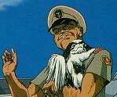
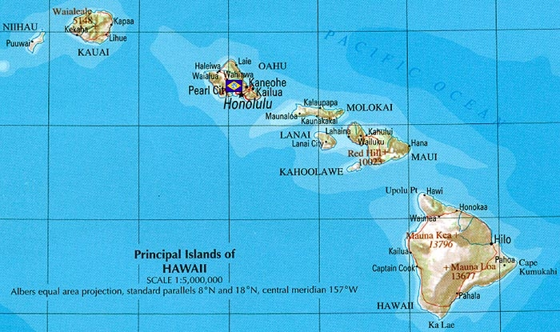

Honolulu Honolulu
Pacific Ocean, Hawaii Island Fortress Nguen Vao Kai In early 0079, Zeon launched a major operation to take Honolulu from the Federation, knowing the importance of controlling the Pacific Ocean. However, this was one of the only fortresses that managed to repel Zeons assault, and to this day has been one of the hardest nuts for the Duchy to crack. Situated in the tiny Hawaiian islands, Honolulu is extremely well defended by a good mix of aircraft, tanks, defensive turrets and marine mobile suits. It protects the thoroughfares going between Jaburo and East Asia, and does its best to stop convoys leaving the docks at California.  Nguen Vao Kai An old commander set in his ways, Vao Kai is never seen without his dog Jasmine, who follows him just as loyally as any of his soldiers. He is strict with his men, but is known to have a penchant for theatre, a large collection of old movies and soundtracks hidden in his office. He is the man who led Honolulu to its victory in the early days of the war, and his control of the area is even stronger now that he has been supported with his own mobile suits. Honolulu  |